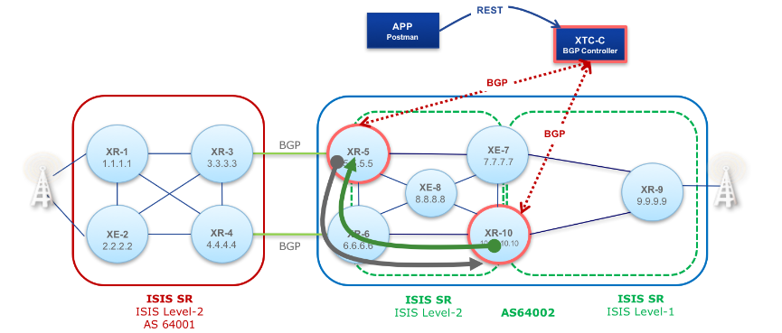

Challenge Project Segment Routing
This documentation can be viewed with VuePress or under the public website.
MPLS
The Multi-Protocol Package Label Switching protocol allows router to leverage the efficiency of switching with the feature-set of routing. MPLS is the data plane and uses BGP for the control plane(label and route distribution).
Underneath the MPLS overlay network needs to be a traditional network infrastructure. There needs to be a routing protocol and a transport protocol. This allows router that are not participating in MPLS to receive route updates. Obviously, route updates need to be transported via BGP and the traditional routing protocol.
Segment Routing

Segment Routing enhances MPLS with a route controller. The controller may define MPLS routes for individual endpoints, applications, failures or priorities. Those rules are stored in the controller as sr policy. The controller sends BGP updates, to control the packet flows according to the policy, in real time.
Our application is able to message with the controller over a RESTful HTTP protocol. The controller solves the real-time constraints of BGP and allows our application to focus on rule definition and analysis.